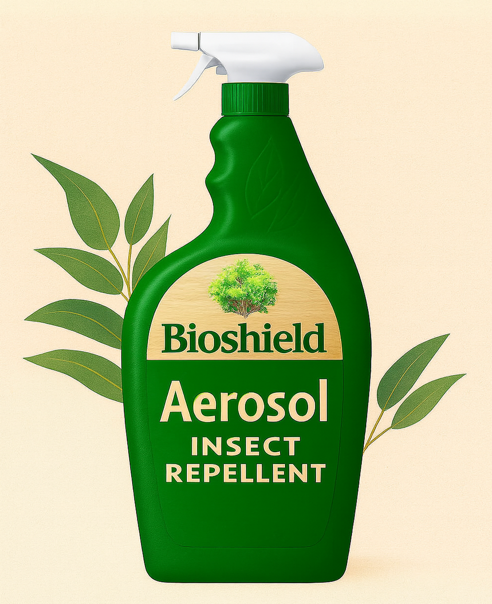
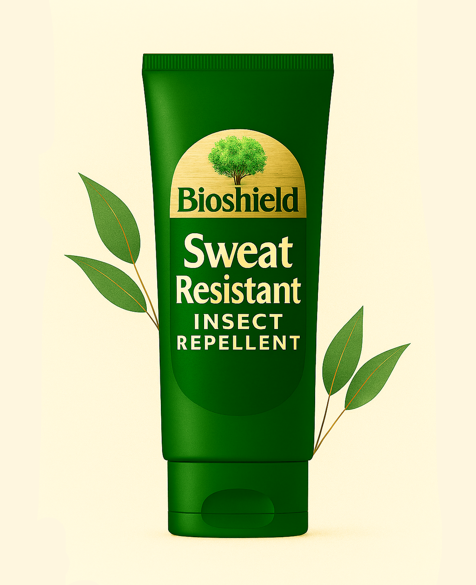

Powered by oil of lemon eucalyptus (PMD), natures most effective plant-based repellent, this spray provides strong protection against mosquitoes. Its clean, refreshing scent and non-greasy feel make it ideal for everyday outdoor use, from backyard evenings to weekend hikes.
20% Picaridin Insect Repellent
Our maximum-strength 20% picaridin formula offers long-lasting defense against mosquitoes, ticks, and other biting insects. Designed to be gentle on skin and non-greasy, it’s also safe for use on clothing and gear. Ideal for reliable protection during travel and outdoor activities.

Aerosol Insect Repellent
Our aerosol delivers fast, even coverage with powerful protection. Made with a blend of plant-based oils and eco-conscious active ingredients, it creates a strong shield against mosquitoes and biting insects. Lightweight and easy to apply, it keeps you protected without heavy chemical odors.
Balm Stick Insect Repellent
This solid balm stick glides on smoothly for mess-free application anywhere you need it. Infused with citronella, neem, and soybean oil, it nourishes your skin while keeping mosquitoes and other pests away. Compact and portable, it’s perfect for pockets, packs, and travel.
Clothing & Gear Friendly Insect Repellent
Formulated to protect both you and your equipment, this spray is tough on insects but gentle on fabrics. With a picaridin-based formula, it helps repel mosquitoes and ticks without staining or damaging clothing, tents, or gear. Perfect for camping, hiking, and extended outdoor adventures.

Sweat-Resistant Insect Repellent
Stay protected even on your most active days. This sweat-resistant lotion blends 20% picaridin with plant-based extracts to guard against mosquitoes and ticks through heat, humidity, and movement. Lightweight and non-sticky, it’s built for sports, hiking, and long days outdoors.